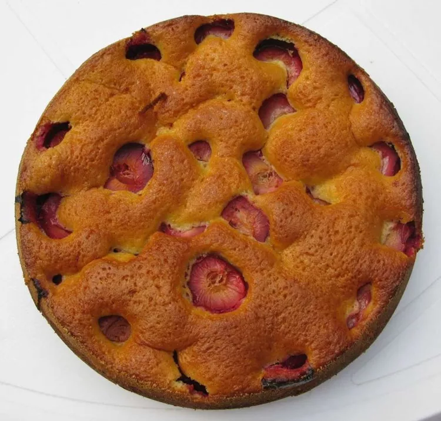

Plum Cake

Description
This pretty plum cake is made with a buttery sponge cake recipe, topped with sliced plums, cinnamon, and sugar before being baked to perfection for a delicious way of using fresh plums when in season. Serve with whipped cream.
Ingredients
- cup white sugar
- 2 large eggs
- all-purpose flour
Steps
- Preheat the oven to 350 degrees F (175 degrees C). Grease a 10-inch springform pan.
- Combine sugar and butter in a large bowl and beat with an electric mixer until light and fluffy. Add eggs, 1 at a time, and beat well after each addition. Combine flour, baking powder, and salt in a separate bowl and sift on top of the butter mixture; mix to combine. Transfer batter into the prepared springform pan and smooth out.
- Set plums inside batter, cut-side up, and sprinkle evenly with cinnamon-sugar.
- Bake in the preheated oven on the lowest rack until a toothpick inserted into the center comes out clean, 40 to 50 minutes. Serve warm or cool to room temperature.